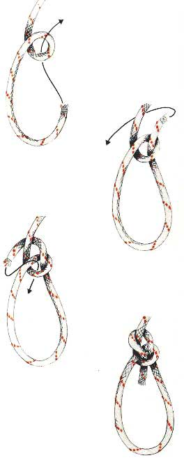

De Paalsteek
Gebruik
De paalsteek is eigenlijk geen steek maar een knoop, bedoeld om een niet-schuivende lus in een touw te maken. Het is bij lange na niet de sterkste lusknoop. Een paalsteek vermindert de breeksterkte van een stuk touw tot circa 40%. Erg betrouwbaar is de paalsteek ook al niet, vooral in stug of glad touw. Paalsteken kunnen losschieten (bij zware belasting) of lostrillen (bij helemaal geen belasting). Toch wordt de paalsteek heel veel gebruikt voor allerlei toepassingen, vanaf het vastmaken van een touw voor het dichtbinden van een pakketje tot en met klimmersactiviteiten. In klimmershandboeken wordt altijd geadviseerd om een of twee halve steken (tegen de draairichting in) op het staande eind te zetten om de betrouwbaarheid te verhogen. De paalsteek is gemakkelijk te maken en eenvoudig los te trekken, ook al heeft er een grote druk op gestaan.
Methode
Om hem te maken slaat men een scherpe bocht of een oog in de tamp, die lang moet worden gehouden in verband met de gewenste lengte van de lus. Bij het oog ligt het vaste part onder. Men steekt de tamp van onderen naar boven door het oog. De tamp wordt om het vaste part heengeslagen en opnieuw door het oog gestoken. De knoop wordt aangetrokken door gelijktijdig aan het vaste part en aan de tamp te trekken.
Als men de knoop aan kinderen wil aanleren, dan noemt men de lus een vijvertje, het vaste part een boompje, en de tamp een visje. Het visje springt dan uit het vijvertje, rond het boompje en terug in het vijvertje.
